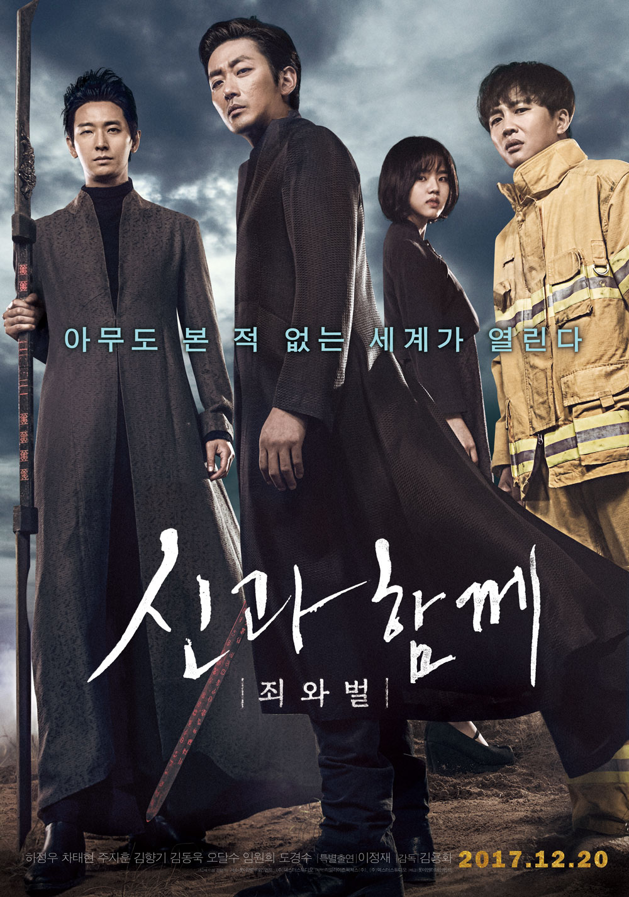

네티즌 평점: 7.0
예고편: https://kakaotv.daum.net/v/379806429
신과함께-죄와 벌(2017)
저승 법에 의하면, 모든 인간은 사후 49일 동안 7번의 재판을 거쳐야만 한다. 살인, 나태, 거짓, 불의, 배신, 폭력, 천륜 7개의 지옥에서 7번의 재판을 무사히 통과한 망자만이 환생하여 새로운 삶을 시작할 수 있다. “김자홍 씨께선, 오늘 예정 대로 무사히 사망하셨습니다” 화재 사고 현장에서 여자아이를 구하고 죽음을 맞이한 소방관 자홍, 그의 앞에 저승차사 해원맥과 덕춘이 나타난다. 자신의 죽음이 아직 믿기지도 않는데 덕춘은 정의로운 망자이자 귀인이라며 그를 치켜세운다. 저승으로 가는 입구, 초군문에서 그를 기다리는 또 한 명의 차사 강림, 그는 차사들의 리더이자 앞으로 자홍이 겪어야 할 7번의 재판에서 변호를 맡아줄 변호사이기도 하다. 염라대왕에게 천년 동안 49명의 망자를 환생시키면 자신들 역시 인간으로 환생시켜 주겠다는 약속을 받은 삼차사들, 그들은 자신들이 변호하고 호위해야 하는 48번째 망자이자 19년 만에 나타난 의로운 귀인 자홍의 환생을 확신하지만, 각 지옥에서 자홍의 과거가 하나 둘씩 드러나면서 예상치 못한 고난과 맞닥뜨리는데… 누구나 가지만 아무도 본 적 없는 곳, 2017년 새로운 세계의 문이 열린다!네티즌 평점: 7.0
예고편: https://kakaotv.daum.net/v/379806429

국제시장(2014)
그 때 그 시절, 굳세게 살아온 우리들의 이야기 1950년 한국전쟁을 지나 부산으로 피란 온 ‘덕수’(황정민 분)의 다섯 식구, 전쟁 통에 헤어진 아버지를 대신해야 했던 ‘덕수’는 고모가 운영하는 부산 국제시장의 수입 잡화점 ‘꽃분이네’서 일하며 가족의 생계를 꾸려 나간다. 모두가 어려웠던 그때 그 시절, 남동생의 대학교 입학 등록금을 벌기 위해 이역만리 독일에 광부로 떠난 ‘덕수’는 그곳에서 첫사랑이자 평생의 동반자 ‘영자’(김윤진 분)를 만난다. 그는 가족의 삶의 터전이 되어버린 ‘꽃분이네’ 가게를 지키기 위해 ‘선장’이 되고 싶었던 오랜 꿈을 접고 다시 한번 전쟁이 한창이던 베트남으로 건너가 기술 근로자로 일하게 되는데… 가족을 위해 굳세게 살아온 그때 그 시절, 가장 평범한 아버지의 가장 위대한 이야기가 시작된다!네티즌 평점: 7.1
예고편: https://kakaotv.daum.net/v/63516374